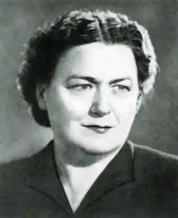
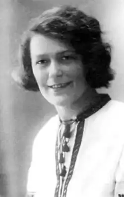
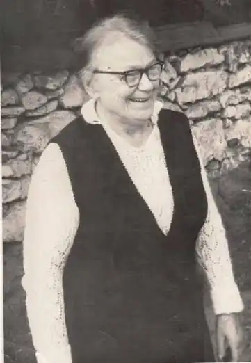

Українська письменниця, літературна критикиня і редакторка.
Ірина Вільде — псевдонім Дарини Дмитрівни Полотнюк-Макогон (Полотнюк — за чоловіком, Макогон — за батьком). Вона народилася 5 травня 1907 р. у м. Чернівці в родині письменника Дмитра Макогона, який походив з давнього шляхетського роду, що відзначився у Хотинській війні 1621 р. У Чернівцях здобула початкову освіту. Через конфлікти батька з румунською владою 1923 р. разом з усією родиною, нелегально перейшовши польсько-румунський кордон, Вільде оселилася у Станиславові (тепер — Івано-Франківськ). Тут вона завершила середню освіту, познайомилася з майбутнім чоловіком Євгеном Володимиром Полотнюком, працювала у приватній українській гімназії. Від 1928 р. навчалася у Львівському університеті Яна Казимира на славістиці, була однокурсницею Богдана Ігоря Антонича, з яким пізніше підтримувала творчі контакти. На 4-му курсі змушена була перервати навчання, за одними джерелами — через матеріальні труднощі, за іншими — через підозру у причетності до Української військової організації (УВО). У 1933 р., коли її однокурсники завершили університетські студії, Ірина Вільде вчителює, а відтак розпочинає свою журналістську діяльність: переїжджає до Коломиї, де працює у часопису "Жіноча доля", що був на половину актуально-суспільним, на половину літературним виданням. Тут письменниця й журналістка живе і працює до 1939 р. Дистанційно вона є активною у львівському літературному просторі — саме тут виходять її книжки. За збірку новел "Химерне серце" і повість "Метелики на шпильках", що вийшли у 1935 р., Ірина Вільде стала лауреаткою другої нагороди премії Товариства письменників і журналістів ім. І. Франка — найпрестижнішої літературної відзнаки в українській Галичині.
Від 1944 р. і аж до смерті Ірина Вільде — у Львові. Працювала кореспонденткою газети "Правда України" (1945–1949), була обрана депутаткою Верховної ради УРСР, до обласної і міської рад м. Львова. Нагороджена двома радянськими орденами (1947, 1957). У 1965 р. отримала Шевченківському премію за роман "Сестри Річинські". Довгий час була головою Львівської організації Спілки письменників УРСР. У Львові письменниця жила на теперішній вулиці Максима Кривоноса (буд. 33, кв. 7). Померла 30 жовтня 1982 р. Похована на Личаківському цвинтарі. –1939 У контексті літературного процесу Галичини періоду міжвоєння Ірина Вільде займала важливе місце, проте її письменницька постава була скромною. Майже до кінця 1930-х рр. вона мусила виправдовуватися, що має право не порушувати актуальні проблеми суспільного життя, передусім через культивовану у той час історичну прозу. Премія ТОПІЖ у 1935 р. викликала хвилю дискусій на кшталт: чи той світ, стиль письма та начебто марґінальні проблеми, які репрезентує своїми творами Вільде, є вартими відзнаки від літературного середовища, а отже пошани від суспільності? Втім, Вільде мала своїх прихильників і прихильниць, насамперед серед т. зв. ліберального, тобто позаідеологічного середовища письменників, критиків та митців. І хоча вона не була такою відомою, як дві інші тогочасні письменниці Катря Гриневичева і Наталена Королева, все-таки як авторка малої та великої прози, низки журналістських публікацій та редакторка часописів здобула визнання і мала авторитет. У 1936 р. Богдан Ігор Антонич написав синтетичний нарис про дві книги Вільде, що отримали відзнаку, щоправда, цей текст не був опублікований. Інший важливий матеріал, з якого чи не найбільше черпаємо основи мистецького світогляду Вільде, — це інтерв'ю, що його взяв у письменниці Михайло Рудницький для двотижневика "Назустріч", теж у 1936 р. Тут Вільде твердить, що її "охопив якийсь неспокій за людське серце, таке, яке воно є саме в собі без тієї сітки всіх ниток і вузликів, що в'яжуть його із зверхнім, чи пак, суспільним світом", і далі: "Ні, ні, доки не впораюся з цим малим світиком – з людським серцем, не візьмуся, просто не зможу сягнути до ширших проблем людського життя". Така програма цікава не лише як визнання своєї не-належності до панівного так чи так ідеологічно обумовленого дискурсу, але й як контраст до того, що сталося з письменницею від 1939 р. і далі. 1939 та +1939 Ірина Вільде і Михайло Рудницький — це дві видатні постаті західноукраїнського літературного життя міжвоєнного періоду, проєвропейськи орієнтовані літератори, представники т. зв. ліберального літературного напряму, які залишилися у Львові, коли тут остаточно утвердився Радянський Союз. Це й наклало відбиток на їхню біографію і творчість. 1939 рік 32-річна Ірина Вільде зустріла як авторка близько п'ятдесяти творів малої і великої прози та есеїстики. Якщо у міжвоєнній Галичині Ірина Вільде була далека від суспільно-національних тем у своїй творчості, належала до позаідеологічних письменниць, була виразно жіночою авторкою (відповідно до тодішнього уявлення про жіночність та жіноче письмо), то радянська культурно-літературна політика стала для неї викликом. Зрештою, на сьогодні мотиви радянізації Вільде як особистості та як письменниці, драматичні чи прагматичні обставини цього вибору є до кінця не проаналізовані чи відрефлектовані. Так само це стосується Михайла Рудницького, доля якого стала предметом більшої уваги, зокрема у книзі Олі Гнатюк "Відвага і страх". Особливого контрасту це набуває тоді, коли усвідомлювати амплітуду світоглядних коливань письменниці. Під час першої радянської окупації Львова у 1939 р. Ірина Вільде відчувала себе ще не до кінця впевнено. Остап Тарнавський згадує її у числі тих авторів, яким у 1939-му р. "нелегко … було включитись у вироблену й вимагану соцреалістичну манеру", вона, "в якої було найбільше темпераменту… не могла цього темпераменту виявити і, за винятком одного млявого нарису, не написала ні рядка [йдеться про перші роковини "визволення"]". Натомість Петро Панч виділяє Вільде серед тих авторів, які жили у довоєнному Львові і залишилися жити й працювати у ньому і які — за риторикою автора — відверто визнавали свою належність до цього дискурсу: "Зовсім інакше звучав нарис Ірини Вільде. В кожному рядку відчувалась непідроблена радість і вдячність Червоній Армії, що принесла в Галичину щастя для знедоленого народу, волею імперіалістів позбавленого своєї Батьківщини". Втім, робити остаточний вибір Ірині Вільде довелося уже в 1944 р., в часі другої радянської окупації. Мотиви такого рішення можна пояснювати традиційно — страхом, вимушеною колаборацією. На сьогодні є два шляхи інтерпретацій її свідомого чи примусового вибору. Один з них формулюють Наталка і Ярема Полотнюки, невістка і син письменниці, у післямові до перевиданого міжвоєнного циклу її повістей (2007) : "... Ірина Вільде, як і вся інтеліґенція "другої хвилі еміґрації", могла у 1944 р. втекти на Захід: письменниця вільно володіла французькою і німецькою мовами, до того ж в Австрії чи південній Німеччині ще проживали родичі матері. Та "римське" виховання, отримане в домі батьків і в гімназії, підказує письменниці залишитись на батьківщині і розділити долю зі своїм народом. Її любили, їй вірили і надіялися на неї. Залишитися у краю було для неї нелегким рішенням, однак іншого вона собі не уявляла" (с. 482). З іншого боку, у статті про Ірину Вільде в авторській енциклопедії української літератури Богдана Романенчука "Азбуковник" (Філядельфія, 1973) іронічно, якщо не вкрай негативно, охарактеризовано "радянський" поворот письменниці. Автор бере у лапки радянські реалії, які врешті стали реаліями творчої та інтелектуальної біографії Ірини Вільде: "Під час німецької окупації Галичини жила то тут, то там, а з другим наїздом большевиків переїхала до Львова і стала "громадською діячкою" — їздила з бригадами письменників по селах аґітувати за колгоспи. Працювала тоді теж спеціяльним кореспондентом газети "Правда України". За цю діяльність була вибрана "депутаткою" до Верховної ради Української СС Республіки та до обласної і міської ради м. Львова. Пізніше була ще нагороджена "великим довірям партії" і двома орденами (1947, 1957)..." (т. 2, с. 154). Відтак Романенчук, відштовхуючись від особливостей риторики тодішніх літературно-критичних матеріалів, трактує Вільде як таку письменницю, що цілком вписалася у радянський літературний канон: "Ідеологію комуністичну письменниця вивчала, як і сама зізнається, за порадою С. Тудора й О. Десняка, на те, щоб знати, як персонажі повинні правильно думати, діяти й почувати по-марксівськи. Цій ідеології вона завдячує те, що її визнали "радянською письменницею" і прийняли до Спілки письменників, де вона, що писала колись про "маленьке людське щастя", стала поруч із "такими титанами літератури" (її власні слова), як С. Тудор, О. Гаврилюк, Я. Галан. Обзнайомившись із марксо-ленінською філософією, вона "зросла громадськи й політично і досягла свого щастя", бо "громадськість визнала її твори", а критика назвала їх "реалістичними, достовірними й правдивими". Більшого щастя вона не могла б зазнати" (т. 2, с. 157). Безперечно, кореляція між мотивами колаборації західноукраїнських авторів із радянською системою та риторикою тодішнього літературно-програмового дискурсу мусить бути глибше проаналізована. Упродовж наступних чотирьох десятиліть Ірина Вільде працювала над своїм opus magnum "Сестри Річинські", переробляла міжвоєнну повість "Повнолітні діти", активно підтримувала контакти із молодими письменниками у Львові, часто організовувала неформальні літературні зібрання. Дехто із молодих письменників називав її "нанашкою" (хресною матір'ю) у літературі. Втім, згадуючи галицьке міжвоєння та свою тогочасну активність, вона далеко не на всьому фокусувалася, зокрема, оминала увагою забороненого у радянські часи Богдана Ігоря Антонича, одного із найважливіших письменників для неї у передвоєнний час. Твори Ірини Вільде Міжвоєнний період: Збірка новел "Химерне серце" (Львів, 1936); Трилогія повістей: "Метелики на шпильках" (Львів, 1936), "Б'є восьма" (Львів, 1936), "Повнолітні діти" (Львів, 1939). Радянський період: збірки оповідань, нарисів, повістей: "Історія одного життя" (1946); "Наші батьки розійшлися" (1946); "Ті з Ковальської" (1947); "Стежинами життя" (1949); "Яблуні зацвіли вдруге" (1949); "Кури" (1953); "Нова Лукавиця" (1953); "На порозі" (1955); "Винен тільки я" (1959); "Життя тільки починається" (1961); "Троянди і терня" (1961); "Людське тепло" (1964). романи: "Повнолітні діти" (перероблений на основі довоєнного циклу "Метелики на шпильках") (1952); "Сестри Річинські" (у 2 кн., 1958–1964).